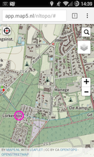

Hieronder informatie en voorbeelden om met Map5.nl kaartdiensten toepassingen te ontwikkelen.
Uiteraard dient /gast/ in het URL-pad, door de eigen
/key/ (unieke sleutel per abonnement) vervangen te worden.
Niet zelf ontwikkelen? Zie app.map5.nl voor apps die direct
gebruikt kunnen worden.
Voor het maken van een webapp met de Leaflet-bibliotheek zie de NLExtract Opentopo Apps en hun live versie op app.nlextract.nl/ot. De webapps zijn in zowel RD met TMS als in XYZ-tiling.
Voor het maken van een webapp met de OpenLayers-bibliotheek zie de Demo Pagina. Bij ieder voorbeeld zit een stuk OpenLayers-code.
Voor het maken van een webapp met de Heron Mapping Client zie de KadViewer applicatie en vele Heron voorbeelden.
Vooral de KadViewer kent vele GIS-mogelijkheden. Indien je een Map5 abonnement hebt kun je je key opnemen in de URL van de KadViewer, bijv http://kadviewer.kademo.nl?key=<mijn_key>. Dan krijg je geen reclame. Met een professioneel abbo kun je ook kaarten printen op PDF en andere formaten. Zie meer info over de KadViewer op app.map5.nl.
|
De Map5 NLTopo app werkt in moderne browsers op
mobiel, tablet en desktop.
Als je een abonnement hebt kun je de NLTopo app zonder
*Bij veranderen kaartbeeld wordt steeds het URL segment aangepast. De conventie hiervoor is: |
 |